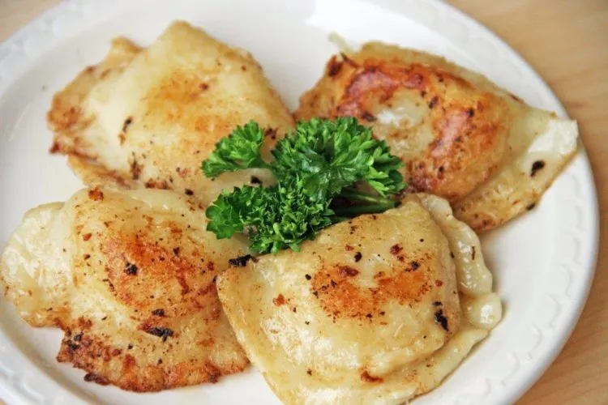

No one really knows where pierogies were invented, we just know dumplings were most likely invented in China, and that Poland adopted dumplings and made pierogies during the middle ages. Other theories state that Saint Hyacinth brought pierogies from the Far East (Asia) to Europe in the 13th century, or that pierogi were spread by Marco Polo's expeditions through the Silk Road.
What are Pierogies?
Pierogies are a Polish dumpling which can consist of many different fillings such as cheese, potato, ground meat, fruits, berries, edible mushrooms, and more. Pierogies are often served with sour cream.

Ingredients
Dough
2 cups (240g) All-Purpose Flour
1/2 teaspoon salt
1 large egg
1/2 cup (113g) sour cream
4 tablespoons (57g) butter, room temperature
Filling
1 cup (227g) mashed potatoes, warm
1 cup (113g) sharp cheddar cheese, shredded
Finishing Touches
4 tablespoons (57g) butter, cold
2 large (156g) shallots, diced; or one medium (156g) onion, sliced
Directions
To make the dough: Mix together the flour and salt. Add the egg to flour and combine. The dough will be quite clumpy at this stage.
Work in the sour cream and soft butter until the dough comes together in a slightly rough, slightly sticky ball.
Using just your fingertips, knead and fold the dough without adding additional flour until the dough becomes less sticky but still quite moist.
Wrap the dough well in plastic wrap and refrigerate for 30 to 60 minutes, or up to 48 hours.
To make the filling: Combine the warm mashed potato and cheese. Stir and mash until the cheese is melted and the filling is cool to the touch. Taste and adjust the seasonings with salt and pepper.
To fill the pierogi: Roll half the dough 1/8" thick. Use a 2" round cutter to cut circles of dough. Repeat with the other half of the dough. Save the scraps; these can be snipped into small pieces and added to simmering soups.
Place 1 1/2 teaspoons of filling on each round of dough. Gently fold the dough over, forming a pocket around the filling. Pinch the edges of the pierogi to seal, then seal again with the tines of a fork.
At this point the pierogi can be frozen for up to 4 weeks, or refrigerated overnight, or cooked in a large stockpot of boiling salted water. Only cook about 10 pierogi at a time, so that they have room to float without sticking. When the pierogi float, they're done. The time will vary depending on if they're fresh or frozen.
Sauté the shallots or onion in the butter in a large skillet until the onion begins to brown. Add the drained pierogi and cook until browned and crisped. Serve hot with additional sour cream, applesauce, or other condiments.
Sources
This is the link to the recipie of Pierogies Link 1